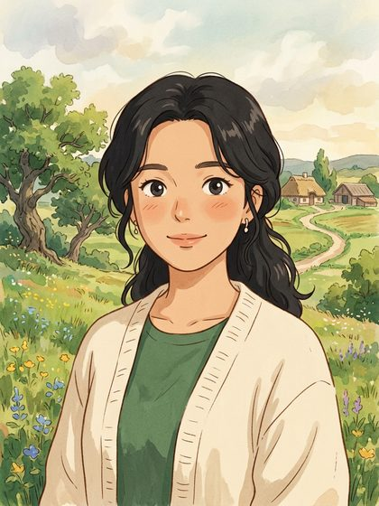
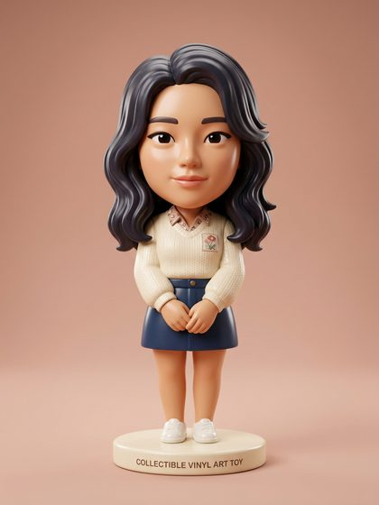
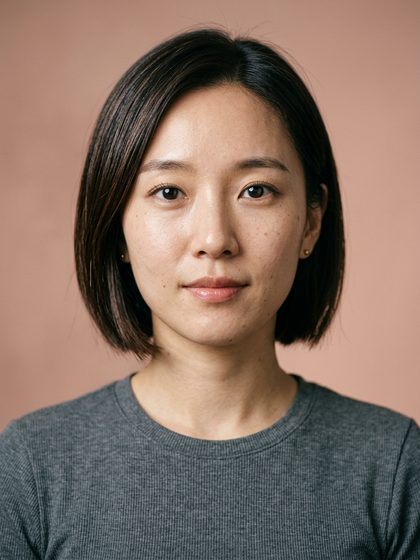
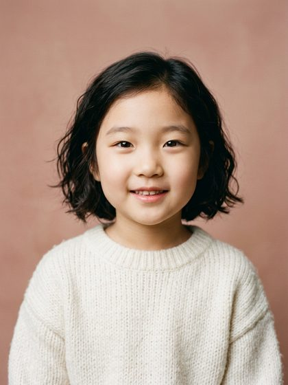
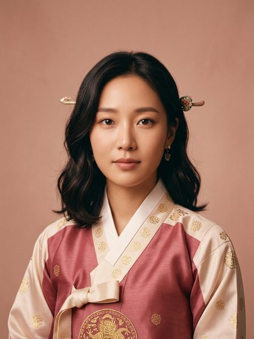

✕
CHAERIN AI STUDIO
오늘은 어떤 나로
바꿔드릴까요?
사진 한 장이면
다른 세계의 내가 됩니다
네 살
스물다섯
시간여행 — 손으로 밀어보세요
AI 변신
옆으로 넘기기 →

지브리풍
ANIME

피규어
3D TOY
웹툰
ILLUST

헤어 체인지
STYLE
📷
사진 한 장 올리기
한 번 올리면 아래 전부에 그대로 씁니다
🔒 얼굴 원본은 저장하지 않아요 — 결과만 남습니다

시간여행
열 살부터 여든까지, 그때의 나
100P
헤어스타일
48종 중에서 오늘의 머리
200P

전통의상
나라별 전통의상 전신 화보
200P
✨
닮은꼴
당신과 닮은 얼굴 찾기
무료
💄
윤채린에게 물어보기
피부·화장·스타일 상담
›
시안 · AI 스튜디오
시간여행 슬라이더 + 요즘 유행하는 AI 변신(지브리·피규어·웹툰).
※ 인물은 AI로 만든 가상 이미지입니다(실존 인물 아님)